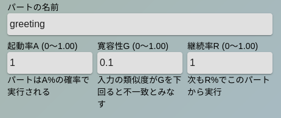

このチャットボットは辞書を使って会話をします。 辞書にはユーザが「お早う」と発言したらチャットボットが「おはようございます！」と返答するという、 ユーザ発言-チャットボット返答の組み合わせのリストが書かれています。 普通、一回の雑談の中では何回もの会話のキャッチボールを行っています。チャットボットの作者は、 膨大な発言-返答の組み合わせを前もって辞書に書き込んでおくことで雑談に対応します。
このチャットボットの辞書にはユーザの発言とそれに対するチャットボットの返答の組み合わせを書き込みます。 ユーザが「お早う」と発言したとき、チャットボットには「おはようございます！」と返答してもらいたいとします。 その場合、辞書は以下のようになります。
[
[["お早う"],["おはようございます！"]]
]
ここでユーザが「おはよう」「お早うございます！」などと少し言い方が違う場合もチャットボットには同じく
「おはようございます！」と返答してもらえると便利です。それには複数の発言候補を「,(カンマ)」で区切って表します。
[
[["お早う","おはようございます","お早うございます！"],["おはようございます！"]]
]
逆にチャットボットも「おはよ〜」「おはよう！」「おはようございます！」
のように返答のレパートリーがあると良くなりそうです。
[
[["お早う","おはようございます","お早うございます！"],
["おはようございます！","おはよ〜","おはよう！","おはようございます！"]]
]
なお、複数の返答候補がある場合、チャットボットはどれか一つをランダムに選んで返答にします。
次に「こんにちは」にも返事ができるようにしましょう。 その場合は以下のように書きます。
[
[["お早う","おはようございます","お早うございます！"],
["おはようございます！,"おはよ〜","おはよう！","おはようございます！"]],
[["今日は","こんにちは"],["はーい！こんにちは！"]]
]
もとの行の最後尾にカンマを書き足すのを忘れないでください。
「ミケさん今日は！」のように、チャットボットがユーザの名前を呼んでくれるのは重要です。 辞書の中では、ユーザ名の代わりに{userName}、 チャットボット名の代わりに{botName}と書くことで、現在のユーザ名、 チャットボット名に自動的に置き換わります。
[
[["お早う","おはようございます","お早うございます！"],
["おはようございます！{userName}さん"]]
]
ここまでで辞書の書き方の説明は終了です。チャットボットの画面上で辞書を書き換えることはできますが、 量が多くなると読みにくいため、PCなどで編集したものをコピペするのがおすすめです。 なお、辞書はjson形式になっています。json lintと呼ばれるサイトや対応したエディタを使うことで、 文法チェックができます。
ここで日常の雑談を詳しく観察すると、一つの雑談の中でいくつかの話題について話しています。 私達は一つの話題が進んでいる間はそれに集中して他の話題のことは一旦考慮から外したり、 ある話題が一度話されたら同じ内容を二度は話さないといった話題レベルでの切り替えを常に行っています。 このような切り替え無しで一つの辞書ですべてを作ると、 チャットボットは一問一答型のふるまいしかできないようになっていきます。 一問一答型のチャットボットは話題を追いかけることができないため、 「人の言うことを聞いていない」という印象を人間に与えてしまいやすくなります。
そこでFairyLabでは挨拶や一つ一つの話題を「パート」とよび、パートごとに辞書を分けて作成するようにします。 さらにこれら複数のパートは共存し、入れ替わりながら現れるようにします。そのためFairyLabのチャットボットを 「パート共存型チャットボット」と呼ぶことにします。
このチャットボットでは複数のパートを優先順に並べたパートリストがあり、 [チャットボットの設定]画面でパートの内容と順番を設定することができます。 ですが会話が毎回同じ筋書きで進むことになると不自然なため、各パートは乱数を使って動作の仕方を調整します。 これに使われるのが起動率、寛容性、継続率 という3つのパラメータです。
起動率＝0.00〜1.00
パートは実行するかどうかを起動率で指定された確率でまず決めます。起動率が0だと全く実行されず、1だと必ず実行されます。 起動しない場合はリストの次のパートに処理が移ります。
寛容性＝0.00〜1.00
起動率のチェックにより実行することが決まったパートは、辞書を調べてユーザ発言と一致する回答の候補を検索します。 辞書には 辞書に書かれた内容を比較すると、「少し似ている」 回答の候補にはそれぞれどの程度一致したかを0~1で示すスコアがあり、チャットボットは最もスコアの高かった候補の中から 一つをランダムに選んで回答とします。 ここで寛容性を0にしておくと完全に一致した（＝スコアが１）ものだけを利用し、寛容性が1に近いとスコアが低くても 一致したとみなして返答を行います。 寛容性は値を大きくすることにより言い回しのブレを吸収しやすくなりますが、 大きくしすぎると全然違う回答をしやすくなります。
継続率＝0.00〜1.00
寛容性によるチェックで返答を行うことになったパートは、継続率によるチェックを行います。 継続率はこのパートが続けて使われるかどうかを決める確率で、 継続率チェックに成功した場合このパートはパートリストの先頭に移り、次の会話では最初に利用されるようになります。 チェックに失敗した場合はパートリストの最後尾に移動し、次の会話では最も使われにくくなります。